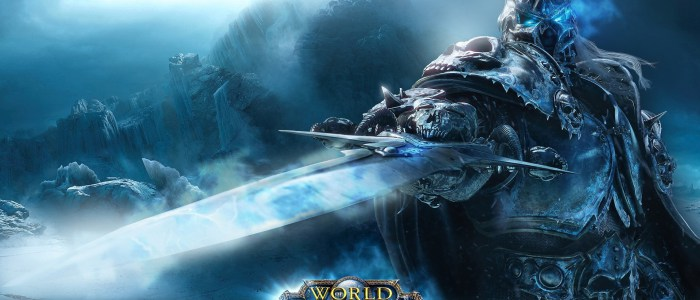
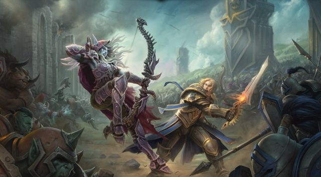

The birth of mmorpg allows players to experience a completely different way of playing games. In previous RPGs or other games, players can only choose to kill opponents or other players. But in mmorpg, the multiplayer team Raiders copy became the new model. The assignment of teammates and teams has become crucial, and single-handedness has become a niche. Mmorpg makes the game one of the social tools, and many like-minded friends know each other by it.
Blizzard Entertainment
Blizzard Entertainment, a US video game developer and publisher, was founded on February 8, 1991 by three graduates of the University of California, Los Angeles under the name Silicon & Synapse, and is headquartered in Irvine, California. Blizzard Entertainment's products enjoy a high evaluation in the PC game industry. Although there are not many games produced, most of them are more popular. Among them, games such as Warcraft, StarCraft, Diablo, etc. are well received by players and are listed as competitions by multiple e-sports events. Blizzard Entertainment is now the US video game publisher of Activision Blizzard.
Official website link

The Background of Warcraft
Just as humans, orcs and their allies have just recovered from the fierce battle against the Burning Legion, today's death knight, Arthas Menethil, has begun to massacre the eastern kingdom of Azeroth under the name of the Scourge. Residents. But a powerful new force that can defeat Arthas and its minions has risen. The undead camp branch called the Forsaken is a rebel army led by the Banshee Shivanas. At the same time, the night elf, Ilidan Rage, who was polluted by the demon, sent troops to the glacier continent in the northern rift, in an attempt to attack the Lich King. Arthas rushed to the escort in time, and the defeated Illidan was shamed to escape the outer domain. In the end, in front of the throne close to the mighty forces of the Scourge, Arthas lost his mind and voluntarily merged his will with the Lich King.

The Model of character
Derivative product
Since its inception in 1994, the World of Warcraft IP has affected countless game enthusiasts and developers. In fact, the script originally written for the game has been tens of millions of books that have been rewritten into novels. The huge worldview of this story laid the foundation for Blizzard's subsequent development of other related games. Today's popular card game Hearthstone legend, as well as the real-time strategic game Warcraft, dota1/2 are its derivatives. In 2016, Blizzard launched the World of Warcraft movie, which is popular in China. Countless new and old players wear World of Warcraft T-shirts and shout slogans to the cinema. Looking back now, it is still a shocking scene. We believe this game will create more miracles in the future.